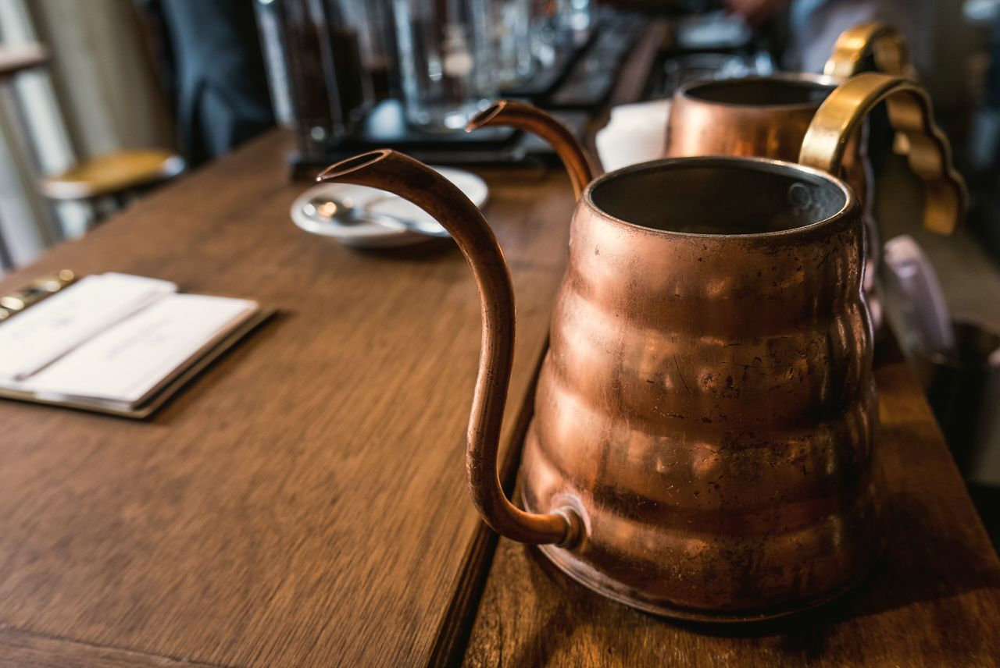

04เรื่องของเราOur story
เรื่องของร้านเล็ก ๆ ในปั๊มA small cafe in a petrol station
เราเริ่มจากรถเข็นกาแฟคันเดียวหน้าปั๊มน้ำมันเมื่อปี 2564 ลูกค้าประจำที่แวะเติมน้ำมันทุกเช้าคือเหตุผลที่เราย้ายเข้ามาเปิดร้านจริงจังด้านหลังปั๊มWe started in 2021 with one coffee cart outside the petrol station. The regulars who stopped every morning are why we moved into a real shop out back.
ทุกวันนี้เรายังคั่วเมล็ดเองทีละน้อย อบขนมก่อนเปิดร้าน และจำชื่อเมนูประจำของทุกคนได้We still roast in small batches, bake before we open, and remember everyone's usual.
— แพรและต้น ผู้ก่อตั้ง (ตัวละครสมมุติ)— Prae & Ton, founders (fictional)